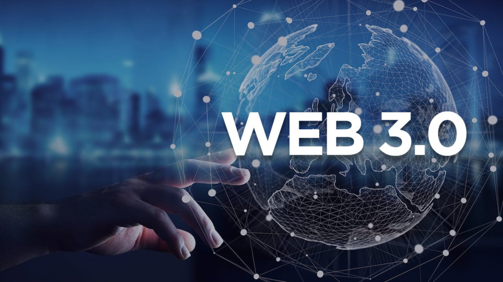

Posted on January 1, 2024
Web 3.0, often referred to as the "Semantic Web," marks the evolution of the internet towards a more intelligent, interconnected, and personalized user experience. This new phase diverges from the social networking and user-generated content focus of Web 2.0, embracing instead technologies like artificial intelligence, machine learning, blockchain, and the Internet of Things (IoT) to facilitate smarter data processing and seamless user-device interactions. Central to Web 3.0 is the enhancement of machine-to-machine communication, decentralized systems, and data interoperability. It strives for a semantic understanding of the web, enabling machines to comprehend and process the meaning of data, which in turn, improves search accuracy, delivers targeted recommendations, and fosters context-aware applications. Decentralization, powered by blockchain technology, reduces reliance on central authorities, enhancing data security and fostering trust in online interactions. Personalization becomes more refined with Web 3.0, as algorithms and analytics tailor experiences to individual user behaviors and preferences, offering a level of customization previously unseen. Moreover, the push for interoperability aims to dismantle existing data silos, encouraging a more collaborative and accessible web. Privacy and security are also paramount, with Web 3.0 designs prioritizing user control over personal data and implementing robust protections against cyber threats. In essence, Web 3.0 heralds a shift towards a decentralized, intelligent, and user-focused digital ecosystem, promising to redefine the possibilities of online innovation, collaboration, and individual empowerment.
0 Likes